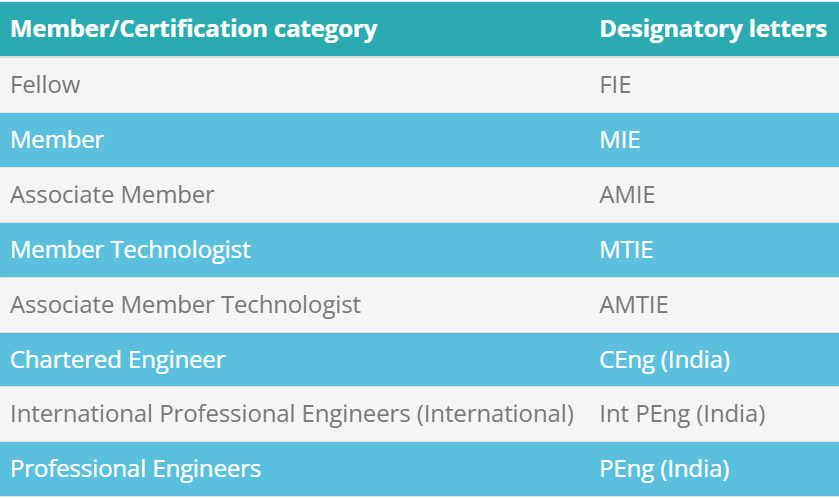

A Corporate Member who has obtained Chartered Engineer’s Certificate from IEI possesses the platform to practice as self-employed consultant in Engineering Profession in India and abroad. This certification provides value addition during the empanelment as Valuer, Loss Assessor with various Government bodies and Financial Institutions. Corporate Members are entitled to receive Chartered Engineer certificate on payment of requisite fee.
Professional Engineer Certification enhances the knowledge, skill and competency of engineering professionals and also elevates their career by making them a member of an elite group of engineers. The rise in demand of competent engineers in the country necessitates the importance of Professional Engineers for certifying the engineering plans, drawings etc. for any public works of the government departments
The following table depicts the designatory letters that can be appended after name based on membership category and certification as per entitlement.
Facilitates IEI members to undertake various training programs at Engineering Staff College of India (ESCI), Hyderabad, through Continual Professional Development (CPD).
Share your expertise, develop your knowledge and contacts and broaden your career and professional horizons by involving with IEI. The IEI has more than hundred centres in the major cities and towns around the country, ensuring that there is a community of members near you. Technical activities in your local area enable you to meet the fellow professionals and enjoy benefits of your network with your peers.
Facilities to use rich collections of the IEI library networks at any part of the country. Attend National & International Seminars, workshops conducted by IEI in different parts of the country at a concessional rate. Opportunity to participate in technical events e.g. seminars, Symposia, Conventions, Workshops etc. organized by various IEI centres at State, National and International levels at a concessional rate of 20%.
E-access to IEI-Springer Journal and avail hardcopy of the same at a concessional rate.
E-access to other technical publication e.g. IEI News, IEI Epitome.
IEI Members of various Educational Institutions are given preference in the disbursement of grant-in-Aid for R&D Activities.
Maintain your profile
Update your skill areas
Record your CPD
Build your impressive CV
To make yourself visible to the industry
Find Your Peer
Corporate Members are eligible for exemption from appearing in Section A and may appear directly in Section B in additional branch examination of IEI.
Corporate Members (MIE/FIE only) may be empanelled as internal project guide in Section B examination conducted by IEI.
Corporate Members may avail the opportunity of staying in the IEI Guest houses spread over all important locations in India.
The President of India, the Vice President of India, the Prime Minister of India and Governors of States or equivalent Heads of States and Union Territories as may be invited by the Council to become Honorary Fellows for the period of their respective tenures of office.
Honorary Life Fellows may be conferred by the Institution on persons in India and abroad for their high eminence in engineering or the sciences or who have contributed to the industrial advancement or development of engineering profession. All such conferment shall be by invitation and shall be announced at the next Annual General Meeting of the Institution. The number of the Honorary Life Fellows shall not be more than fifty at any time
Fellow is the highest grade amongst the IEI Corporate Members category eligible to use designatory words FIE in their name. Fellow is awarded based on the knowledge, contribution and experience of the person in the respective engineering field after due scrutiny of the application by a board of eminent personalities.
(1) Minimum 40 years on the date of application.
(2) BE/B.Tech or equivalent qualification recognized by the Institution shall be accepted for various classes of membership. Other qualification may be accepted in consultation with the Equivalence Committee.
(3) Any applicant with BE/B.Tech or equivalent qualification recognized by the Institution and a total post-qualification experience of atleast 15 years and holding a position of high responsibility.
The processing of application for enrollment as corporate member (F/M/AM) normally takes two months time and that of non corporate ST Members takes three months time from the date of acknowledgement. All FIE / MIE/ AMIE / SMIE / ST Members after the enrolment are expected to receive the letter of Election by e-mail. The corporate members will also receive photo-icard and certificate by registered post within 2 months time after the enrolment. The newly enrolled ST members are expected to receive Photo Identity Card by speed post/registered post within two months time after the enrolment.
As per the Declaration No.16 of the Royal Charter, 1935, “Every person being at any time a Corporate Member of the Institution may so long as he shall be a Corporate Member take or use the name or title of Chartered Engineer (India)”.
It has been observed that the Chartered Engineer certificate is often useful for the following purpose:-
To be empanelled in various financial institutions like Bank, Insurance companies etc.
To be empanelled as Chartered Engineer in the Original Side of High Courts, Central Excise and Customs and other similar govt concerns.
To act as Inspecting and Certifying Engineers under statutory enactments and arbitration proceedings.
To get contracts of civil works from Municipal Corporations and similar government bodies.
To have better opportunities of being employed and / or promoted in multinational organisations.
To practice as self employed consultant in India and abroad. In general, the Chartered Engineer certificate being issued by the IEI (which is one of world’s oldest and largest professional bodies of Engineers), plays the role of recognition and acceptance of one’s techno-academic qualification and professional attainment on a global platform.
The Council at its 713th Meeting held at Hyderabad decided to introduce a Certificate of Practice bearing a Practice Registration Number (PR No.) which would be for five years.
Candidate should be a Corporate Member of The Institution of Engineers (India).
Candidate must possess Chartered Engineer Certificate from The Institution of Engineers (India) in the current grade of membership.
Candidate must have minimum five years of experience as Chartered engineer in the relevant field.
The Institution of Engineers (India) is devoted to promote the efficiency and ethical practice in engineering services and committed to disseminate the information on the recent developments in engineering amongst the professionals. IEI helps engineering professionals to undertake planned and structured Training Programmes, attend Seminars, Workshops, etc. for Continual Professional Development (CPD) of the professionals.
IEI supports Continuing Professional Development to its Members and Engineering Professionals in following ways:-
Training Program at Engineering Staff College of India: Engineering Staff College of India (ESCI) is an autonomous organ of ‘The Institution of Engineers (India)’. ESCI was established with the mandate of providing quality training and education in engineering and techno-management domains.The primary objective of ESCI is to impart professional and need-based continuing professional development and training in frontier areas of Engineering, Scientific and Management fields, simultaneously providing professional consultancy and technical services to the industry. ESCI's operations are firmly grounded in its desire to act as a bridge between academic institutions. Click to view program details.
Technical Activities at Different parts of the Country: The Institution of Engineers (India) conducts various technical activities like International Conference, National Convention, All India Seminar / Workshop, One Day Seminar in various parts of the country. The topics of these technical activities are in parity the recent development and requirement of the engineering and sciences and the speakers are the leader of industry and academics. For Program Diary Please click
Awards & Scholarship: IEI present a number of awards recognizing Professional performance in different branches of engineering. Also gives a range of scholarships which helps the engineers to advance their career and get more experience professionally.
IEI offers Life Institutional Membership to organizations throughout India. Any public or Local Body, Registered Company or Firm or an Individual may desire to be attached as Institutional Member (IM).
IEI has forged partnership with the globally renowned journal publishing house: SPRINGER. Institutional Members are entitled to enjoy free e-access to IEI Journals by logging in through www.ieindia.org.
Technical collaboration and sponsorship for arranging technical seminars / symposia / workshops etc.
Institutional Members may avail the opportunity for R&D grant from IEI.
Five Library Cards of IEI libraries without payment of any fees, (Security deposit however, is applicable).
Participation of two representatives of Institutional Member in International activities organized by IEI across the country at a concession of 50% in Registration fee.
Participation of Deputed Staff (both Engineering and Managerial) in Seminars / Symposia / Workshops at a concessional rate of 20% as offered to regular Corporate Members.
Concession of 5% in the rate for advertisement in the Institution Publication provided these are sent directly to the Institution.
Use of Institution Premises for Technical / Academic purpose on payment of fee to be fixed by the State / Local Centre.
Facility of IEI guest room accommodation to Managerial / Technical Staff at rates fixed by the State / Local Centre.